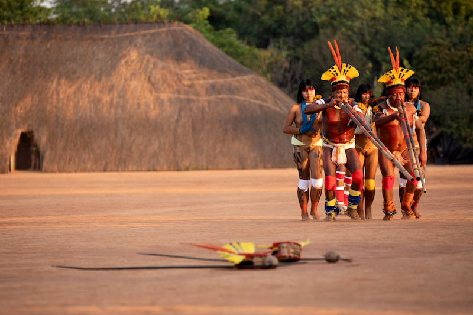

Boas vindas à ATIX!
Associação Terra Indígena do Xingu

Quem somos?
Mais abrangente das associações do Território Indígena do Xingu, a ATIX é uma organização de referência que organiza e mobiliza os diferentes povos.
A Associação Terra Indígena Xingu - ATIX foi fundada em 1994 segundo a decisão das lideranças Xinguanas, que reunidos no Posto Indígena Diauarum, resolveram criar sua própria organização indígena que representasse legalmente o interesse das comunidades do Parque Indígena do Xingu perante os órgãos públicos e privados, em busca de apoio para atender uma parte das necessidades das comunidades Xinguanas. A ATIX, desde a sua fundação, vem atuando na área de fiscalização da fronteira do PIX, transporte, saúde e educação, buscando também gerar alternativas econômicas para as comunidades como a venda de artesanato, mel e praticando através disso a valorização cultural dos povos Xinguanos.